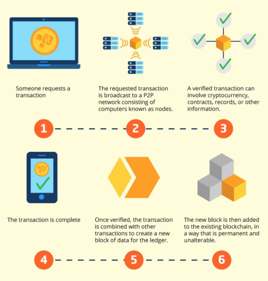

| CRYPTOCURRENCY | |
| A paradigm shift towards financial decentralisation by Siobhain Doyle '22 |  |
| As we continue the long battle with Covid - 19, the masked problem of toxic positivity which you might accidentally be spreading may become a more pressing issue if it isn’t highlighted quickly...
|
Siobhain Doyle '22 |
 |
|
|
Privacy and security is becoming more and more of a foreign concept in our world today with many different software automatically installed into devices in order to track personal data. Technology is advancing at unprecedented rates in our world today, giving rise to solutions to tackle common world issues such as security, particularly in finance. The introduction of Decentralised finance, also known as Defi, aims to use technology in order to eliminate the intermediaries between parties in a financial transaction. In other words, it is a concept in which financial products are available on a public decentralised blockchain network allowing any individual to trade through defi platforms or the blockchain, in the form of coins or tokens, therefore removing the need to go through banks. Removing the need to go through intermediaries allows for a more frictionless financial system, where unnecessary costs such as interest rates set by the world bank are avoided alongside any potential disputes with banks.
“Whereas most technologies tend to automate workers on the periphery doing menial tasks, blockchains automate away the center. Instead of putting the taxi driver out of a job, blockchain puts Uber out of a job and lets the taxi drivers work with the customer directly.” – Vitalik Buterin, co-founder of Ethereum
What is a blockchain & how does it work? In simple terms, a blockchain is practically a large ledger that is continually expanding. Each transaction that occurs either creates a new block or gets added to a block, depending on the size of the current block that is being written to. Once a block has been created it is attached to a blockchain with a pointer to the previous block by virtue to its hashl this makes all blocks, and therefore, transactions in the blockchain viewable and trackable. Once a block has been added, it cannot be changed. This makes the blockchain immutable and therefore gives it higher levels of security and trust. The blockchain is maintained through the process of mining, which relies on an operation called proof of work. Proof of work is done through a cryptographic function called hashing. the miners use software that essentially performs the hashing of each transaction. Every time a transaction is submitted to the network, it is stored in a temporary distributed area in each node collectively known as the mempool. These transactions wait in the mempool until a miner picks them up, upon which the metadata of the transactions are combined with a nonce - an arbitrary number - which the miner then cycles through to generate a final hash. if this hash matches a particular set of parameters set by the network and is verified to be correct by other nodes on the network - an action known as consensus - a new block is created and transactions grouped in that block accordingly. The blockchain transactions happen within a peer-to-peer global network. This basically refers to the exchange of cryptocurrencies by a distributed or spread out network. An individual, performing a transaction, acts as a node and every node is equal in the network. Every transaction that is made by a node will make the distributed network larger therefore making it more secure. P2P is what allows the cryptocurrencies to be transferred worldwide, without the requirements of intermediaries that may disrupt the transaction process. Bearing this in mind, a blockchain is what allows individuals to make transactions and buy/sell coins on the crypto market. The fact that these financial transactions are built off of very complex blockchains, the single points of failure is usually eliminated. This means that the risk of potential shutdown of well established coins, such as bitcoin, is very unlikely. Also, since all nodes are practically identical, the costs are significantly reduced, especially in newer generation blockchains that move away from proof of work. This is particularly applicable to low income communities who would be required to pay higher bank interest rates.  However, everything come with risks and costs: The main problem with the financial decentralisation, ironically, is the removal of an intermediary. Most blockchains are viewed upon as trustless as they do not require any trust. There is no single authority in control of crypto hence money that is put in is theoretically up in the air. There is no secure price or a certain bar that sets the price annually, making the prices extremely volatile and vulnerable of ‘whales’. A whale is a firm or individual that holds onto a large proportion of a coin therefore giving them the ability to potentially manipulate the currency valuations. These ‘whales’ have the potential for dumping rug pulls which is extremely dangerous as they have the ability to unexpectedly withdraw the large sums of liquidity out of the coin which is used for dumping. This sudden loss of liquidity could cause a high level of capital to be lost from the ‘minority’ individuals who have invested into the coins, therefore leading to high losses of their investments. Additionally, there is also the risk of the 51% attack. This links in heavily with the idea of ‘whales’. The 51% attack is used to describe the unfortunate event that a group or single person gains more than 50% of the total mining power. This is extremely bad because it would allow a person to make changes to a particular block meaning they can use it for personal gain. The risk of this means that it could potentially cause wealthier individuals to take advantage of their market power hence imposing high risks of false transactions, therefore making the crypto market more vulnerable hence less trustable. Furthermore, there are high risks of pump and dump schemes. These are schemes that are launched and ‘hyped up’ by many individuals that strive to boost the price of a stock, in general, through creating false and misleading statements. With cryptocurrency being such a new concept, many naive individuals fall into the trap of pump and dump schemes and lose large sums of capital, a type of risk that would not usually be associated with centralised banks. A coin that could be proposed as an example to a pump and dump scheme is dogecoin. Dogecoin was known as the ‘meme’ coin with very good reasons as to why it was named so. It was originally built as a ‘fun’ alternative to bitcoin. The doge coin market value was able to hit $40 billion with an additional $20 billion in just 24 hours (Browne). However, the prices declined at intense rates reducing by more than 30% in value in just 2 days. This was due to many of the individuals pulling out money at its peak. This caused dogecoin’s prices to fall significantly which could just be an example of an occurrence that could happen more often in the future. On top of this, there are high levels of environmental and electrical costs associated with mining. Any individual or firm can mine, the most common hardwares used are called ASIC’s, as it has the highest mining power. The reward of mining are financial rewards for the type of blockchain run on their hardware eg: Bitcoin for bitcoin etc. Firms and individuals with the highest sums of capital will be able to buy the best hardware. This therefore increases their share in the mining pool causing them to have a greater chance of attaining the rewards of adding a new block to the blockchain. This therefore means that smaller miners will often be at high disadvantage and hence miners will often spend high sums of capital without any return which is a waste of money essentially. Furthermore, the machines are often noisy which is why it has a negative environmental & social impact. The biggest fear is from the governments and their potential of losing power in transactions. Decentralised finance means that intermediaries will be removed from transactions. All transactions are publicly viewable however governments will not be able to revert transactions which is a cause of concern for them. Further to this, no interest rates are charged, only mining fees for certain blockchains which go towards miners, not towards government revenues. This means that the overall tax revenues collected by governments may decrease which lowers the overall wealth of the government. This could, in the long run, cause lower levels of spending by the government or worst still, increase government borrowing, causing the country to run into debt if the deficit prolongs. Does Defi have the potential to outperform the traditional financial system in the years to come? Many would argue that such an obscure concept could never be attained… being able to make full financial transactions fully operated just by the power of smart contracts. A smart contract is simply an agreement between two people in the form of computer code that runs on the blockchain. It just seems crazy. However, with the rise in technology, the likelihood of it seems to be increasing. The speed of growth is extravagant, hence providing the possibility of exponential growth in the coming years. Bitcoin is one of the main examples showing the high levels of unimaginable levels of growth. The graph provided shows the trend in the growing prices of bitcoin from October 2013 - April 2021. Despite many doubts, bitcoin was able to go against the odds and has changed the perception of financing for many. Furthermore, $1.5 billion was invested into bitcoin in February by Elon Musk. Upon this investment, Tesla has managed a $101 million profit from bitcoin sale therefore providing a cash alternative to income. The investment by Tesla, a huge corporation, caused a shocking increase of prices in bitcoin. The investments by a respected entrepreneur, Elon Musk, has caused an increase in the trust of cryptocurrencies and potentially inspiring other companies to invest in the future too. Furthermore, there is the potential of proof of stake. This is a concept that focuses on the concept that a miner is able to mine block transactions according to the number of coins they hold, except in this case, verifying transactions is termed as minting or forging blocks. It was created as an alternative to proof of work as it lowers the levels of energy required and also reduces the risks of potential 51% attacks. This is because the system is structured in such a way that makes an attack less advantageous for the miner therefore reducing their incentive to do so. In order for this to work, the forger must freeze their coins by relinquishing them. These coins are used to provide a stake in the network. The chance of winning the reward increases with the percentage of coins you hold. The more coins you hold, the higher the chance of winning. The model randomly chooses the winner based on the amount they have staked. Many blockchains are moving towards this model which makes them more secure as there are lower chances of a 51% attack. This is because the forgers are going to want to help keep the network secure by doing things correctly as their coins are in the stake. The shift provides a more equitable token economy with lower chances of hacking occurring therefore increasing the security of coins. In addition, there are lower energy costs which weakens the argument of the sustainability of cryptocurrencies due to the high electricity required to power it. So, in conclusion, with the evolving technology, cryptocurrency definitely stands a chance of increasing its market capitalization. Defi has high potential for growth. The capitalization of all DeFi applications was just at 1.5% of the total crypto market as of July 2020, according to Messari, a crypto analytics firm. Therefore, we could argue that there is a lot of room for growth in the crypto market. There are many drawbacks in cryptocurrency and many more development cycles required to follow. However, with more and more people exploring the concept of it, the more likely cryptocurrency is likely to provide an alternative to centralised banking. Decentralised finance may not completely overtake banks though there is the likelihood that the reliance on banks may decrease. Hence, it is not unrealistic to state that decentralized finance will be more efficient, convenient to use, and secure than traditional finance. |
LIKE 👍 |
|
Editor's note: Too many superscript tags - here is the original link to the document with all references Leave a like or comment here! |